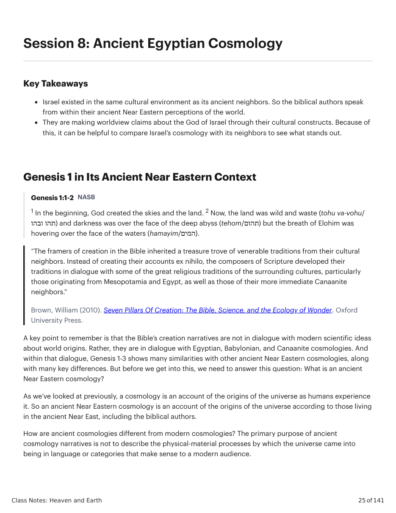
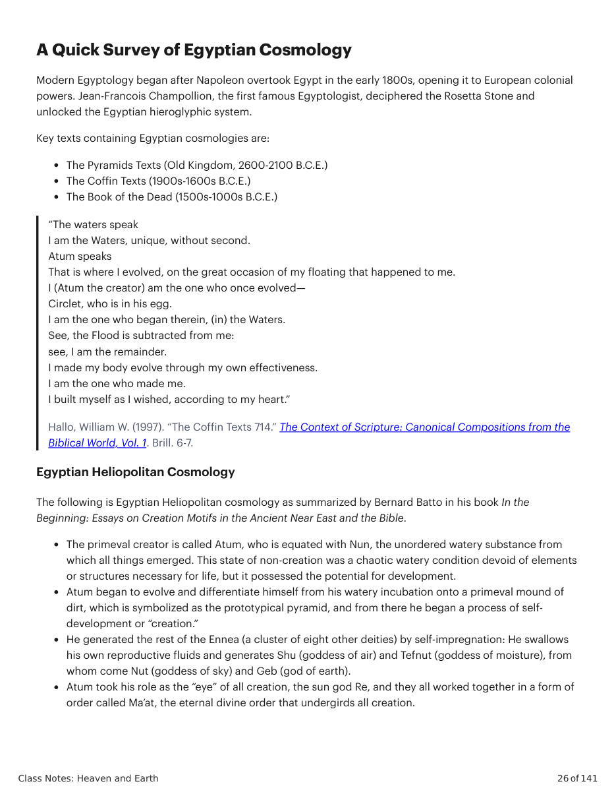
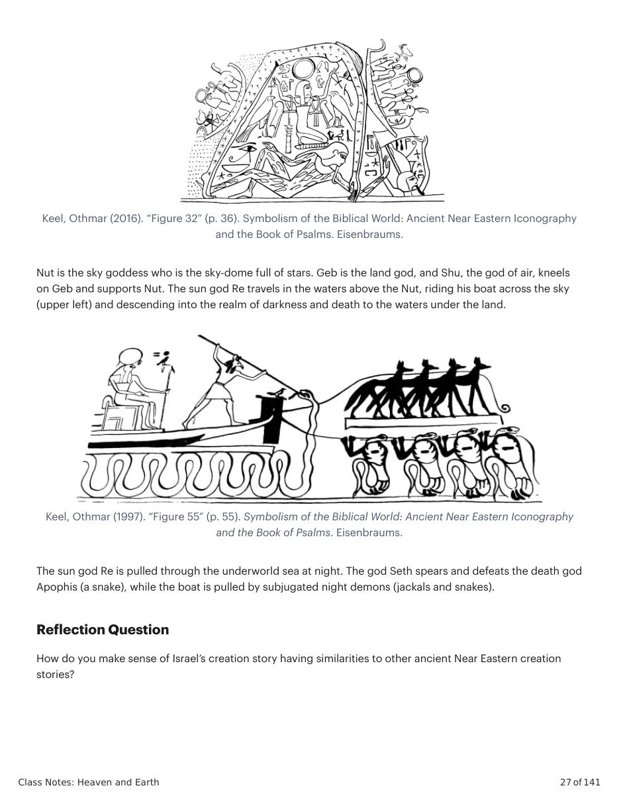

Brown, William (2010). Seven Pillars Of Creation: The Bible, Science, and the Ecology of Wonder. Oxford
University Press. A key point to remember is that the Bible’s creation narratives are not in dialogue with modern scientific ideas about world origins. Rather, they are in dialogue with Egyptian, Babylonian, and Canaanite cosmologies. And within that dialogue, Genesis 1-3 shows many similarities with other ancient Near Eastern cosmologies, along with many key differences. But before we get into this, we need to answer this question: What is an ancient Near Eastern cosmology? As we’ve looked at previously, a cosmology is an account of the origins of the universe as humans experience it. So an ancient Near Eastern cosmology is an account of the origins of the universe according to those living in the ancient Near East, including the biblical authors. How are ancient cosmologies different from modern cosmologies? The primary purpose of ancient cosmology narratives is not to describe the physical-material processes by which the universe came into being in language or categories that make sense to a modern audience. A Quick Survey of Egyptian Cosmology Modern Egyptology began after Napoleon overtook Egypt in the early 1800s, opening it to European colonial powers. Jean-Francois Champollion, the first famous Egyptologist, deciphered the Rosetta Stone and unlocked the Egyptian hieroglyphic system. Key texts containing Egyptian cosmologies are: The Pyramids Texts (Old Kingdom, 2600-2100 B.C.E.) The Coffin Texts (1900s-1600s B.C.E.) The Book of the Dead (1500s-1000s B.C.E.) “The waters speak I am the Waters, unique, without second. Atum speaks That is where I evolved, on the great occasion of my floating that happened to me. I (Atum the creator) am the one who once evolved— Circlet, who is in his egg. I am the one who began therein, (in) the Waters. See, the Flood is subtracted from me: see, I am the remainder. I made my body evolve through my own effectiveness. I am the one who made me. I built myself as I wished, according to my heart.”
Hallo, William W. (1997). “The Coffin Texts 714.” The Context of Scripture: Canonical Compositions from the
Biblical World, Vol. 1. Brill. 6-7. Egyptian Heliopolitan Cosmology The following is Egyptian Heliopolitan cosmology as summarized by Bernard Batto in his book In the Beginning: Essays on Creation Motifs in the Ancient Near East and the Bible. The primeval creator is called Atum, who is equated with Nun, the unordered watery substance from which all things emerged. This state of non-creation was a chaotic watery condition devoid of elements or structures necessary for life, but it possessed the potential for development. Atum began to evolve and differentiate himself from his watery incubation onto a primeval mound of dirt, which is symbolized as the prototypical pyramid, and from there he began a process of self- development or “creation.” He generated the rest of the Ennea (a cluster of eight other deities) by self-impregnation: He swallows his own reproductive fluids and generates Shu (goddess of air) and Tefnut (goddess of moisture), from whom come Nut (goddess of sky) and Geb (god of earth). Atum took his role as the “eye” of all creation, the sun god Re, and they all worked together in a form of order called Ma’at, the eternal divine order that undergirds all creation.
Keel, Othmar (2016). “Figure 32” (p. 36). Symbolism of the Biblical World: Ancient Near Eastern Iconography
and the Book of Psalms. Eisenbraums. Nut is the sky goddess who is the sky-dome full of stars. Geb is the land god, and Shu, the god of air, kneels on Geb and supports Nut. The sun god Re travels in the waters above the Nut, riding his boat across the sky (upper left) and descending into the realm of darkness and death to the waters under the land.
Keel, Othmar (1997). “Figure 55” (p. 55). Symbolism of the Biblical World: Ancient Near Eastern Iconography
and the Book of Psalms. Eisenbraums. The sun god Re is pulled through the underworld sea at night. The god Seth spears and defeats the death god Apophis (a snake), while the boat is pulled by subjugated night demons (jackals and snakes).
How do you make sense of Israel’s creation story having similarities to other ancient Near Eastern creation stories?


